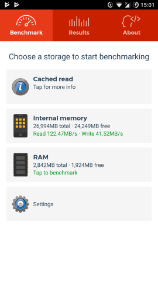
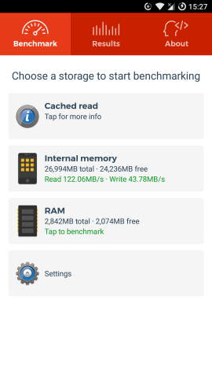
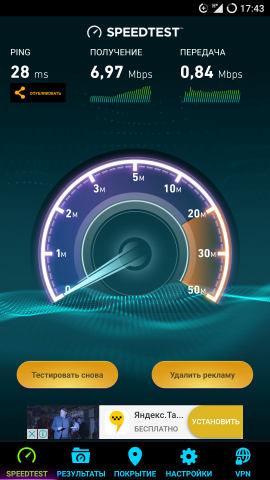
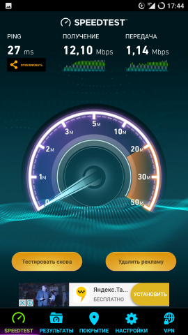

Root
1 способ:
Любым root проводником открываем файл build.prop расположенный в директории /system/, предварительно сделав копию файла. Открываем build.prop и изменяем параметр ro.sf.lcd_density
2 способ:
BuildProp Editor предоставляем разрешение и редактируем
Non-root с помощью ADB
Предполагается что отладка на телефоне включена и он подключен к компьютеру.
adb shell wm density DPI && adb reboot
Ввод adb shell wm density без значения выведет текущее.
Для сброса abd shell wm density reset.
Твики build.prop с 4pda
Мгновенный звук вызова. В зависимости от модели смартфона и установленной прошивки при поступлении звонка гаджет может потратить какое-то время на проверку соединения, прежде чем заиграет мелодия. Для пользователя это выглядит следующим образом: сначала у аппарата просто включается дисплей, и только через секунду с небольшим отображается сам звонок. Исправить такое поведение можно внесением в build.prop двух строк:
ro.telephony.call_ring.delay=0
ring.delay=0
После перезагрузки аппарата все звонки будут поступать мгновенно.
Автоповорот экрана блокировки. За исключением планшетов, практически ни одно Android-устройство не даёт возможность свободно поворачивать экран блокировки при повороте смартфона. Да, эта функция бывает нужна редко, но если гаджет установлен горизонтально в автомобильном держателе, то попытка ввода пароля или графического ключа превращается в настоящую эквилибристику. Всё, что нужно, чтобы избежать акробатических трюков — дописать в build.prop строки
lockscreen.rot_override=true
log.tag.launcher_force_rotate=VERBOSE
Что из этого получится — можете увидеть на скриншоте.
Улучшение производительности
К этой категории мы отнесли твики, которые тем или иным образом увеличат скорость работы вашего гаджета.
Ускорение загрузки. Современные смартфоны нередко загружаются едва ли не дольше, чем обычные ПК. Немного поколдовав над настройками в build.prop, можно с лёгкостью увеличить скорость загрузки гаджета в полтора-два раза! В этом помогут следующие настройки:
debug.sf.nobootanimation=1
ro.config.hw_quickpoweron=true
После внесения этих настроек будет изменён режим выключения гаджета, а также отключена загрузочная анимация разработчика прошивки. В результате при загрузке смартфона вы какое-то время не будете ничего наблюдать на экране. Пугаться этого не стоит: именно благодаря отключению ненужных анимаций тестовый смартфон стал загружаться всего за 30 секунд вместо прежних 50 секунд.
Ускорение работы с памятью. По умолчанию Android логирует множество действий в специальный файл, однако он необходим только разработчикам для дебага приложений. Обычным пользователям этот лог не пригодится, а потому его стоит отключить, добавив в build.prop строку
logcat.live=disable
Отключение лога уменьшит количество дисковых операций, что положительно скажется на быстродействии внутренней памяти смартфона. Правда, разница будет заметна разве что на гаджетах с медленными типами памяти: в нашем случае скорость последовательной записи возросла на 2 МБ/с.

Ускорение сети. Этот твик увеличивает размеры TCP-буферов, что поможет увеличить скорость медленного интернет-соединения, особенно при использовании мобильных сетей. Ну а прописывание DNS-серверов Google в некоторых случаях позволяет снизить время пинга.
net.tcp.buffersize.default=4096,87380,256960,4096, 16384,256960
net.tcp.buffersize.wifi=4096,87380,256960,4096,16384,256960
net.tcp.buffersize.umts=4096,87380,256960,4096,16384,256960
net.tcp.buffersize.gprs=4096,87380,256960,4096,16384,256960
net.tcp.buffersize.edge=4096,87380,256960,4096,16384,256960
net.rmnet0.dns1=8.8.8.8
net.rmnet0.dns2=8.8.4.4
net.dns1=8.8.8.8
net.dns2=8.8.4.4
У нас разница оказалась ощутимой, но не стоит забывать, что наибольшее влияние на скорость оказывает постоянно изменяющаяся загрузка базовых станций.
 
Скорость передачи данных со стандартными настройками Cкорость передачи данных после редактирования build.prop
Увеличение автономности
К сожалению, чудес не бывает — двукратного увеличения автономности достичь не удастся никакими твиками. Но добавить лишние 30-60 минут к времени работы гаджета вполне возможно.
Увеличение интервалов сканирования Wi-Fi. По умолчанию Android сканирует окружающие сети Wi-Fi каждые 20-90 секунд. Причём делает это даже тогда, когда Wi-Fi выключен, но разрешён фоновый поиск сетей для увеличения точности определения местоположения. Чтобы расширить данный интервал, необходимо добавить в файл build.prop строку:
wifi.supplicant_scan_interval=200
Здесь число 200 и является интервалом сканирования сетей в секундах.
Экономия заряда на LineageOS. Небольшой твик, обеспечивающий более эффективное управление спящим режимом при использовании CyanogenMod или LineageOS на смартфонах с чипсетами Qualcomm:
pm.sleep_mode=1